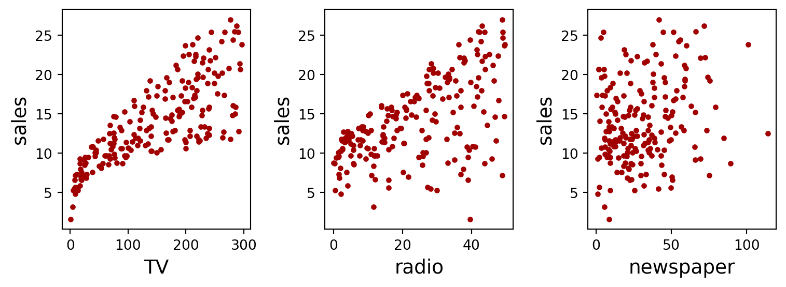
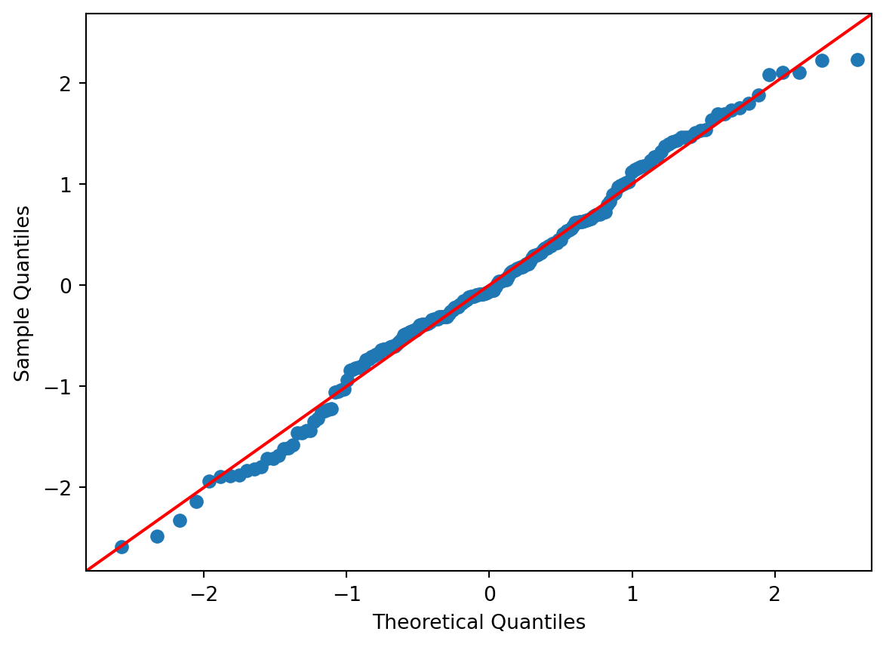
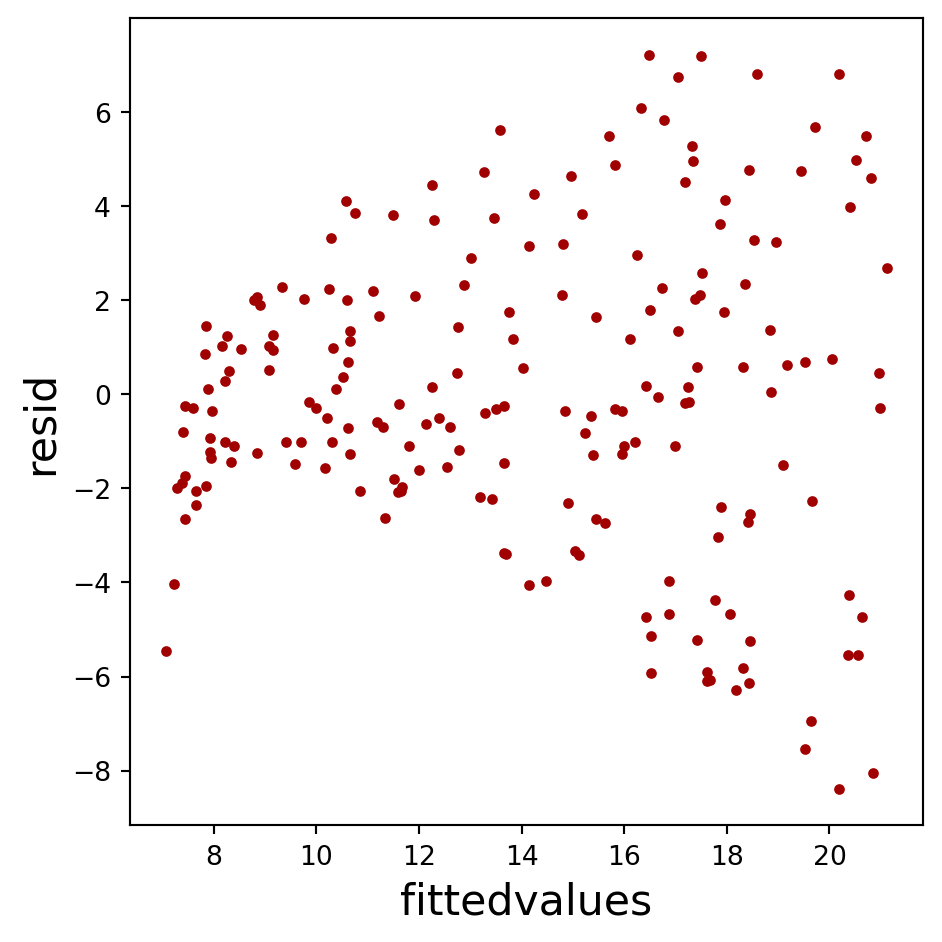
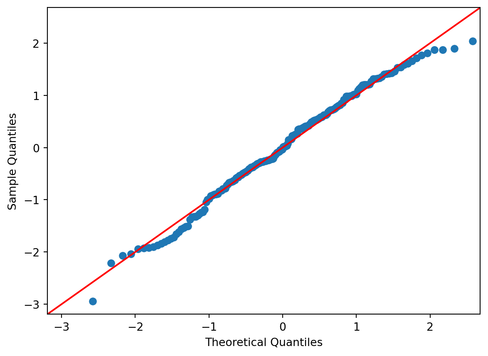
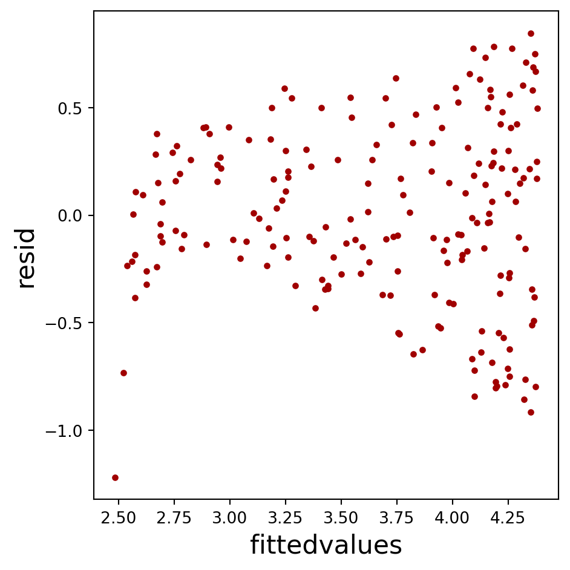
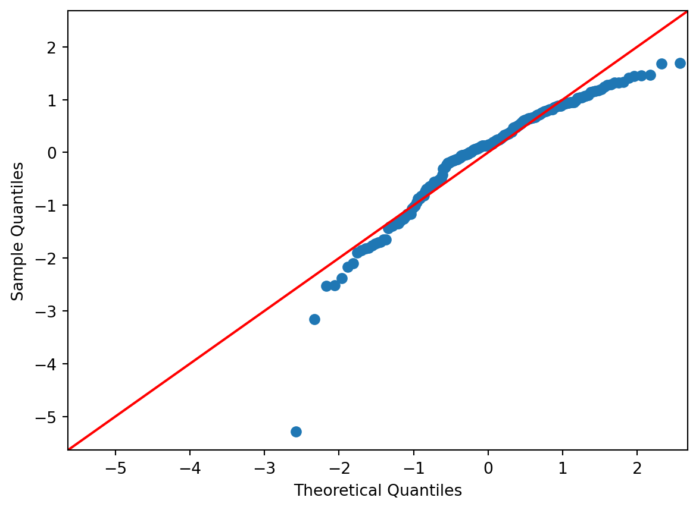

pip install statsmodels scikit-learn Linear Models
Linear Regression
在開始之前，請確保你安裝了必要的 Python 套件，如 statsmodels 和 scikit-learn。你可以使用以下命令安裝：
首先，我們需要匯入分析和繪圖所需的套件。
# 匯入必要的套件
import os # 用於作業系統相關的操作
import pandas as pd # 用於處理和分析資料的資料框架工具
import numpy as np # 用於數學計算，特別是陣列處理
from matplotlib import pyplot as plt # 用於繪製圖表接下來，我們會從網路讀取一個 CSV 檔案，這份檔案包含了不同廣告費用（TV、radio、newspaper）對銷售額的影響。這是我們的資料集，會用來進行後續的分析。
# 從網路讀取 CSV 檔案並載入至 pandas DataFrame
adv_df = pd.read_csv('https://raw.githubusercontent.com/PingYangChen/DS-pytutorial/refs/heads/main/sample_data/Advertising.csv')
# 顯示資料集的前 5 行
adv_df.head(5)
# 計算資料集的總行數
len(adv_df)
# 儲存資料集中的欄位名稱
adv_var = adv_df.columns
# 顯示 TV、radio 和 newspaper 的統計摘要（不包含第一個欄位）
adv_df[adv_var[1:]].describe()| TV | radio | newspaper | sales | |
|---|---|---|---|---|
| count | 200.000000 | 200.000000 | 200.000000 | 200.000000 |
| mean | 147.042500 | 23.264000 | 30.554000 | 14.022500 |
| std | 85.854236 | 14.846809 | 21.778621 | 5.217457 |
| min | 0.700000 | 0.000000 | 0.300000 | 1.600000 |
| 25% | 74.375000 | 9.975000 | 12.750000 | 10.375000 |
| 50% | 149.750000 | 22.900000 | 25.750000 | 12.900000 |
| 75% | 218.825000 | 36.525000 | 45.100000 | 17.400000 |
| max | 296.400000 | 49.600000 | 114.000000 | 27.000000 |
接下來，我們會用 matplotlib 繪製圖表，將 TV、radio 和 newspaper 的廣告費用與銷售額進行視覺化分析。這有助於我們理解不同變數之間的關係。
# 建立圖表，設置大小為12x5英吋
fig = plt.figure(figsize=(8, 3))
# 在第一個子圖中繪製 TV 廣告費用與銷售額的關係圖
ax = plt.subplot(1, 3, 1)
ax.plot(adv_df['TV'], adv_df['sales'], marker='.', linestyle='', color='#A00000') # 繪製散點圖
ax.set_xlabel("TV", fontsize=14) # 設置X軸標籤
ax.set_ylabel("sales", fontsize=14) # 設置Y軸標籤
# 在第二個子圖中繪製 radio 廣告費用與銷售額的關係圖
ax = plt.subplot(1, 3, 2)
ax.plot(adv_df['radio'], adv_df['sales'], marker='.', linestyle='', color='#A00000')
ax.set_xlabel("radio", fontsize=14)
ax.set_ylabel("sales", fontsize=14)
# 在第三個子圖中繪製 newspaper 廣告費用與銷售額的關係圖
ax = plt.subplot(1, 3, 3)
ax.plot(adv_df['newspaper'], adv_df['sales'], marker='.', linestyle='', color='#A00000')
ax.set_xlabel("newspaper", fontsize=14)
ax.set_ylabel("sales", fontsize=14)
# 自動調整子圖間的間距
fig.tight_layout()
# 顯示圖表
fig.show()
Statsmodels
現在，我們將使用 statsmodels 進行統計建模。首先，將目標變數 sales 存儲為變數 y。
# 匯入 statsmodels 用於統計建模
import statsmodels.api as sm
# 將 'sales' 欄位的值存為目標變數 y
y = adv_df['sales']接下來，我們要進行簡單線性迴歸分析。將 TV 廣告費用作為自變數，並嘗試建立一個迴歸模型。
# 將 'TV' 欄位的值存為自變數 x1
x1 = adv_df[['TV']]我們將使用 statsmodels 進行線性迴歸，並生成模型的摘要，這將告訴我們模型的參數和統計顯著性。
# 使用 statsmodels 進行簡單線性迴歸，並建立模型
slr_sm = sm.OLS(y, sm.add_constant(x1)).fit()
# 顯示迴歸模型摘要
slr_sm.summary()| Dep. Variable: | sales | R-squared: | 0.612 |
| Model: | OLS | Adj. R-squared: | 0.610 |
| Method: | Least Squares | F-statistic: | 312.1 |
| Date: | Thu, 17 Oct 2024 | Prob (F-statistic): | 1.47e-42 |
| Time: | 20:39:34 | Log-Likelihood: | -519.05 |
| No. Observations: | 200 | AIC: | 1042. |
| Df Residuals: | 198 | BIC: | 1049. |
| Df Model: | 1 | ||
| Covariance Type: | nonrobust |
| coef | std err | t | P>|t| | [0.025 | 0.975] | |
| const | 7.0326 | 0.458 | 15.360 | 0.000 | 6.130 | 7.935 |
| TV | 0.0475 | 0.003 | 17.668 | 0.000 | 0.042 | 0.053 |
| Omnibus: | 0.531 | Durbin-Watson: | 1.935 |
| Prob(Omnibus): | 0.767 | Jarque-Bera (JB): | 0.669 |
| Skew: | -0.089 | Prob(JB): | 0.716 |
| Kurtosis: | 2.779 | Cond. No. | 338. |
Notes:
[1] Standard Errors assume that the covariance matrix of the errors is correctly specified.
我們將繪製一個 Q-Q 圖（Quantile-Quantile plot），用來檢查簡單線性迴歸模型的殘差是否符合常態分佈。如果數據點沿著對角線分佈，則表明殘差符合常態性假設。
# 繪製 Q-Q 圖（Quantile-Quantile plot），用來檢查殘差是否符合常態分佈
fig = sm.qqplot(slr_sm.resid, fit=True, line="45")
fig.show()
繪製模型的擬合值與殘差之間的關係圖。這個圖表有助於檢查模型的殘差是否具有隨機分佈。理想情況下，殘差應該均勻分佈在零附近，沒有明顯的模式。
# 繪製模型的擬合值與殘差之間的關係圖，用於檢查模型的殘差
fig = plt.figure(figsize=(5, 5))
ax = plt.subplot(1, 1, 1)
ax.plot(slr_sm.fittedvalues, slr_sm.resid, marker='.', linestyle='', color='#A00000')
ax.set_xlabel("fittedvalues", fontsize=16) # 設置X軸標籤為擬合值
ax.set_ylabel("resid", fontsize=16) # 設置Y軸標籤為殘差
fig.tight_layout()
fig.show()
het_breuschpagan 是一種檢查異質變異性的檢定方法。如果模型的殘差具有異質變異性，表示模型不符合假設。 檢定結果會包括四個值，依序分別是：Lagrange Multiplier (LM) 檢定統計量、LM p 值、F 檢定統計量、F p 值。 以下結果顯示 F 檢定統計量的 p 值極小，表示殘差具有異質變異性。
# 進行 Breusch-Pagan 檢定，用來檢查殘差的異質變異性
# 異質變異性指的是殘差的變異是否隨自變數的變化而改變，如果殘差的變異不一致，模型可能不適合。
slr_bptest = sm.stats.diagnostic.het_breuschpagan(slr_sm.resid, sm.add_constant(x1))
# 輸出 Breusch-Pagan 檢定結果
print(slr_bptest)(np.float64(48.037965662293594), np.float64(4.180455907755742e-12), np.float64(62.591404771514256), np.float64(1.7618451425695244e-13))更多線性模型診斷之統計檢定可參考 https://www.statsmodels.org/stable/stats.html#module-statsmodels.stats.stattools
上圖看似擬合值與殘差之間存在二次關係，試進行多項式迴歸分析，這裡將 TV 的平方項加入模型，以捕捉自變數和目標變數之間的非線性關係，並繪製 Q-Q 圖以及擬合值與殘差間關係圖來檢查多項式迴歸模型的殘差是否符合模型假設。
# 建立多項式迴歸模型，將自變數擴展為 TV 和 TV 的平方項
from copy import deepcopy
x1s = deepcopy(x1)
x1s['TV2'] = x1['TV']**2
ploy_sm = sm.OLS(np.sqrt(y), sm.add_constant(x1s)).fit()
# 顯示迴歸模型摘要
ploy_sm.summary()| Dep. Variable: | sales | R-squared: | 0.658 |
| Model: | OLS | Adj. R-squared: | 0.655 |
| Method: | Least Squares | F-statistic: | 189.7 |
| Date: | Thu, 17 Oct 2024 | Prob (F-statistic): | 1.18e-46 |
| Time: | 20:39:34 | Log-Likelihood: | -107.37 |
| No. Observations: | 200 | AIC: | 220.7 |
| Df Residuals: | 197 | BIC: | 230.6 |
| Df Model: | 2 | ||
| Covariance Type: | nonrobust |
| coef | std err | t | P>|t| | [0.025 | 0.975] | |
| const | 2.4754 | 0.085 | 29.141 | 0.000 | 2.308 | 2.643 |
| TV | 0.0116 | 0.001 | 8.509 | 0.000 | 0.009 | 0.014 |
| TV2 | -1.748e-05 | 4.58e-06 | -3.813 | 0.000 | -2.65e-05 | -8.44e-06 |
| Omnibus: | 4.253 | Durbin-Watson: | 1.896 |
| Prob(Omnibus): | 0.119 | Jarque-Bera (JB): | 3.683 |
| Skew: | -0.245 | Prob(JB): | 0.159 |
| Kurtosis: | 2.552 | Cond. No. | 1.11e+05 |
Notes:
[1] Standard Errors assume that the covariance matrix of the errors is correctly specified.
[2] The condition number is large, 1.11e+05. This might indicate that there are
strong multicollinearity or other numerical problems.
# 繪製 Q-Q 圖（Quantile-Quantile plot），用來檢查殘差是否符合常態分佈
fig = sm.qqplot(ploy_sm.resid, fit=True, line="45")
fig.show()
# 繪製多項式模型的擬合值與殘差之間的關係圖
fig = plt.figure(figsize=(5, 5))
ax = plt.subplot(1, 1, 1)
ax.plot(ploy_sm.fittedvalues, ploy_sm.resid, marker='.', linestyle='', color='#A00000')
ax.set_xlabel("fittedvalues", fontsize=16)
ax.set_ylabel("resid", fontsize=16)
fig.tight_layout()
fig.show()

現在，我們進行多元線性迴歸。這次我們使用 TV、radio 和 newspaper 廣告費用作為自變數，來預測銷售額。
# 進行多元線性迴歸，將 TV、radio 和 newspaper 的廣告費用設為自變數
x = adv_df[['TV', 'radio', 'newspaper']]建立多元線性迴歸模型，並顯示模型的摘要來檢查所有自變數對銷售額的影響。
# 建立多元線性迴歸模型
mlr_sm = sm.OLS(y, sm.add_constant(x)).fit()
# 顯示多元線性迴歸模型摘要
mlr_sm.summary()| Dep. Variable: | sales | R-squared: | 0.897 |
| Model: | OLS | Adj. R-squared: | 0.896 |
| Method: | Least Squares | F-statistic: | 570.3 |
| Date: | Thu, 17 Oct 2024 | Prob (F-statistic): | 1.58e-96 |
| Time: | 20:39:34 | Log-Likelihood: | -386.18 |
| No. Observations: | 200 | AIC: | 780.4 |
| Df Residuals: | 196 | BIC: | 793.6 |
| Df Model: | 3 | ||
| Covariance Type: | nonrobust |
| coef | std err | t | P>|t| | [0.025 | 0.975] | |
| const | 2.9389 | 0.312 | 9.422 | 0.000 | 2.324 | 3.554 |
| TV | 0.0458 | 0.001 | 32.809 | 0.000 | 0.043 | 0.049 |
| radio | 0.1885 | 0.009 | 21.893 | 0.000 | 0.172 | 0.206 |
| newspaper | -0.0010 | 0.006 | -0.177 | 0.860 | -0.013 | 0.011 |
| Omnibus: | 60.414 | Durbin-Watson: | 2.084 |
| Prob(Omnibus): | 0.000 | Jarque-Bera (JB): | 151.241 |
| Skew: | -1.327 | Prob(JB): | 1.44e-33 |
| Kurtosis: | 6.332 | Cond. No. | 454. |
Notes:
[1] Standard Errors assume that the covariance matrix of the errors is correctly specified.
# 繪製多元線性迴歸模型的 Q-Q 圖來檢查殘差是否符合常態分佈
fig = sm.qqplot(mlr_sm.resid, fit=True, line="45")
fig.show()
# 繪製多元線性迴歸模型的擬合值與殘差的關係圖
fig = plt.figure(figsize=(5, 5))
ax = plt.subplot(1, 1, 1)
ax.plot(mlr_sm.fittedvalues, mlr_sm.resid, marker='.', linestyle='', color='#A00000')
ax.set_xlabel("fittedvalues", fontsize=16)
ax.set_ylabel("resid", fontsize=16)
fig.tight_layout()
fig.show()

接著，我們嘗試預測一個新的觀察值，假設某個新的廣告費用分配（TV: 100000、radio: 20000、newspaper: 1000），我們將使用模型來預測銷售額。
# 預測一個新的觀察值，廣告費用分別是 TV: 100000, radio: 20000, newspaper: 1000
x_new = pd.DataFrame(data=[{'const': 1, 'TV': 100000, 'radio': 20000, 'newspaper': 1000}])
# 使用多元線性迴歸模型進行預測
mlr_sm.predict(x_new)0 8348.96628
dtype: float64我們可以進一步查看預測的詳細結果，包含預測值的區間範圍等。
# 獲取預測的詳細結果
mlr_sm_pred = mlr_sm.get_prediction(x_new)
mlr_sm_pred.summary_frame()| mean | mean_se | mean_ci_lower | mean_ci_upper | obs_ci_lower | obs_ci_upper | |
|---|---|---|---|---|---|---|
| 0 | 8348.96628 | 215.612681 | 7923.747624 | 8774.184937 | 7923.734631 | 8774.197929 |
Scikit-learn
現在，我們切換到使用 sklearn 進行線性迴歸，這是另一個流行的迴歸分析工具。首先，匯入 LinearRegression。
# 使用 sklearn 進行線性迴歸
from sklearn.linear_model import LinearRegression同樣，我們定義自變數和目標變數，這裡我們使用 TV、radio 和 newspaper 廣告費用作為自變數，銷售額作為目標變數。
# 自變數為 TV, radio 和 newspaper
x = adv_df[['TV', 'radio', 'newspaper']]
# 目標變數為 sales
y = adv_df['sales']建立線性迴歸模型並進行擬合，這會訓練模型來預測銷售額。
# 建立線性迴歸模型
mdl_sk = LinearRegression(fit_intercept=True)
# 使用 sklearn 進行模型擬合
mdl_sk.fit(x, y)LinearRegression()In a Jupyter environment, please rerun this cell to show the HTML representation or trust the notebook.
On GitHub, the HTML representation is unable to render, please try loading this page with nbviewer.org.
LinearRegression()
我們可以獲取模型的截距和每個變數的係數，這些係數告訴我們每增加一單位廣告費用時，銷售額的變化量。
# 獲取截距項
mdl_sk.intercept_
# 獲取迴歸係數
mdl_sk.coef_array([ 0.04576465, 0.18853002, -0.00103749])最後，我們使用 sklearn 模型來預測同樣的新觀察值（TV: 100000、radio: 20000、newspaper: 1000），並查看預測結果。
# 預測一個新的觀察值，廣告費用分別是 TV: 100000, radio: 20000, newspaper: 1000
x_new = pd.DataFrame(data=[{'TV': 100000, 'radio': 20000, 'newspaper': 1000}])
# 使用多元線性迴歸模型進行預測
mdl_sk.predict(x_new)array([8348.96628023])